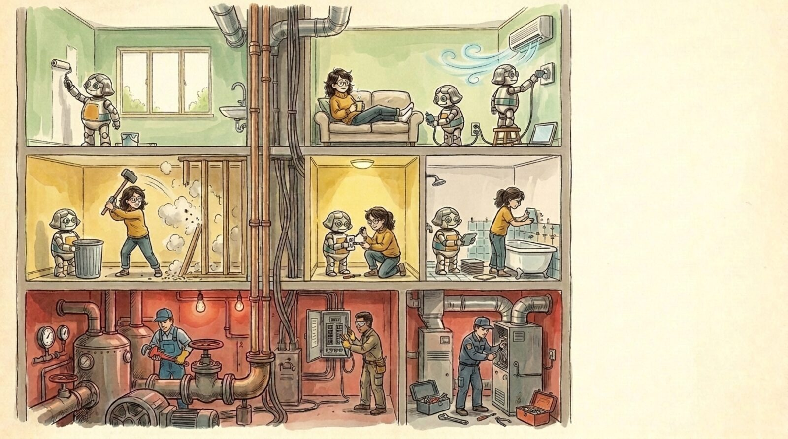

<section id="p16" data-transition="fade" style="background:#f5eee0">
  
  <h1 style="position:absolute; top:190px; left:1470px; width:400px; font-family:Arial, sans-serif; font-size:44px; font-weight:700; line-height:1.1; color:#222222">Software Ownership Tomorrow</h1>
  <ul style="position:absolute; top:50%; left:1470px; width:400px; font-family:Arial, sans-serif; font-size:34px; line-height:1.35; color:#222222; transform:translateY(-50%)">
    <li><b>Trades </b>are 1-person teams with specialized experience.</li>
    <li><b>Remodels</b> have a limited blast radius.</li>
    <li><b>Non-technical</b> upgrades are easy</li>
  </ul>
  <aside>The future of SWE: structure the software in layers, with the right access per layer, like a house. Top floor, presentation: you don't even do the work, you just say what you want and the robots do it. Nobody needs to approve a paint color. Middle floor, business logic: you can do real renovation yourself, with an agent helping, but you know you can break things, so it comes with a warning and an optional second opinion. Basement, infrastructure: water, power, heat. Everything above depends on it, and a mistake floods or burns the whole house. Here you call licensed professionals, and changes need review and explicit sign-off. Non-engineers can't even start them.</aside>
</section>
